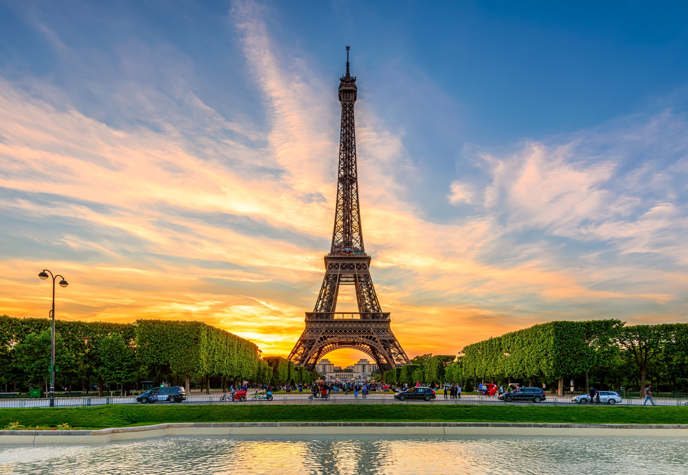
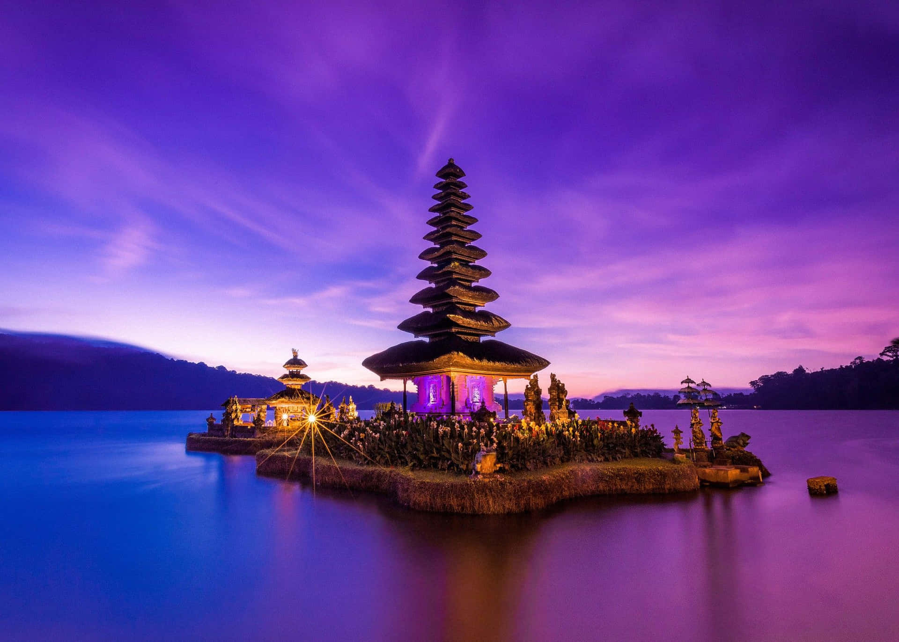

Featured Posts
Exploring London

London is a vibrant city filled with rich history, iconic landmarks, and diverse cultural experiences. Explore the majestic Tower of London, walk across the Tower Bridge, and admire the grandeur of Buckingham Palace. Take a ride on the London Eye for breathtaking views of the city skyline. Stroll through the lush Hyde Park, visit world-class museums like the British Museum and the Natural History Museum, and enjoy the bustling streets of Covent Garden. Experience the lively theater scene in the West End, sample international cuisine in Soho, and don’t forget to explore charming neighborhoods like Notting Hill and Camden Market. Whether you’re interested in history, art, shopping, or nightlife, London has something for every traveler.
Read More
Paris"City of Love"

Paris, the “City of Love,” is famous for its romantic streets, iconic landmarks, and world-class art. Marvel at the Eiffel Tower, stroll along the Champs-Élysées, and visit the historic Notre-Dame Cathedral. Explore the treasures of the Louvre Museum and admire masterpieces at the Musée d’Orsay. Wander through charming neighborhoods like Montmartre, with its bohemian vibe, and enjoy the quaint cafes and patisseries on every corner. Take a relaxing walk along the Seine River, cross the beautiful bridges, and experience a sunset cruise for unforgettable views. Paris is also a haven for fashion lovers, offering designer boutiques and chic street style, and for food enthusiasts, with exquisite French cuisine, from croissants and macarons to gourmet dinners. Every corner of Paris tells a story, making it a city to explore again and again.
Read More
Bali Adventure

Bali is a tropical paradise that captivates travelers with its stunning beaches, lush rice terraces, and vibrant culture. Surfers flock to popular beaches like Kuta, Seminyak, and Uluwatu, while those seeking tranquility can explore Nusa Dua or hidden coves along the coast. Discover the island’s rich spiritual heritage at Ubud’s temples, including the sacred Monkey Forest and Tirta Empul with its holy spring water. Wander through scenic rice terraces in Tegallalang and capture breathtaking sunset views at Tanah Lot and Uluwatu Temple. Bali also offers exciting adventures like mountain treks, waterfall hikes, and snorkeling in crystal-clear waters. Indulge in Balinese cuisine at local warungs, enjoy traditional dance performances, and immerse yourself in the warmth of the island’s culture. Whether you’re seeking adventure, relaxation, or cultural experiences, Bali promises unforgettable memories.
Read More